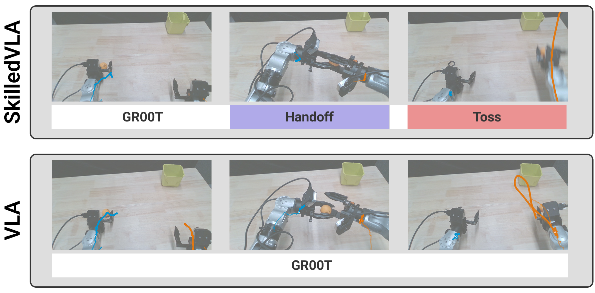
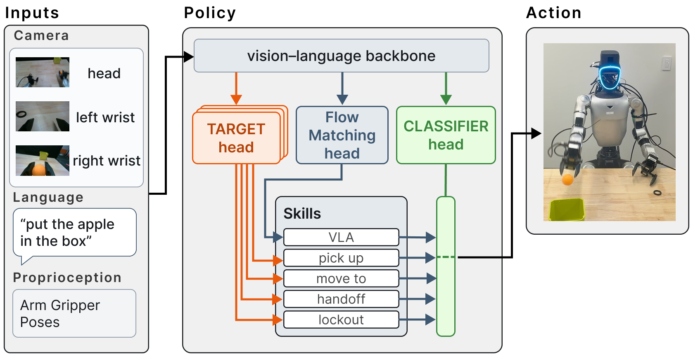
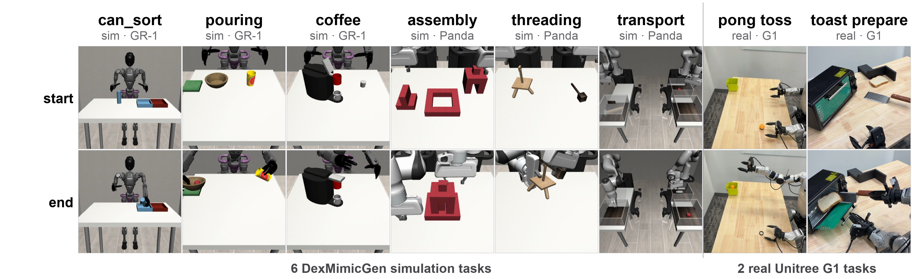
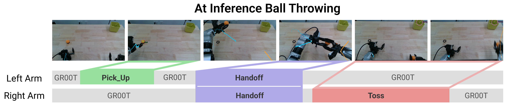
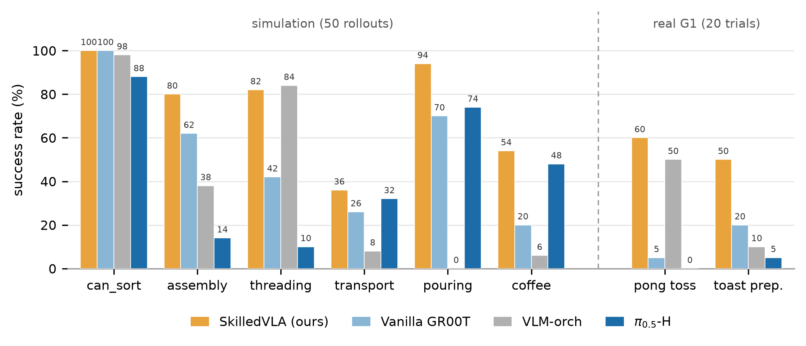

vs. vanilla fine-tuned GR00T
vs. vanilla fine-tuned GR00T
average, two embodiments
SkilledVLA in Action
Real Unitree G1 success rate vs. vanilla GR00T
Pick up, force-verified handoff, then a ballistic toss into the box. 5% → 60%
Scoop the slice, open the oven with the spatula arm locked, load and close. 20% → 50%
Simulation DexMimicGen
Pass the needle's bar through the tripod's ring. 42% → 82%
Seat piece 1 in the base, then piece 2 on top, and release. 62% → 80%
Remove the lid, hand the hammer across, clear the trash. 26% → 36%
Seat the pod in the machine and shut the lid over it. 20% → 54%
Pour the ball into the bowl, then place the bowl on the pad. 70% → 94%
Hand the can across and drop it in the bin of matching color. 100% → 100%
Arrows show vanilla GR00T → SkilledVLA success rate.
Head-to-Head on the Real Robot
A Unitree G1 humanoid with Dex1 grippers, a head-mounted RealSense D435 and two wrist RealSense D405s. In pong toss the robot picks up a ball with the left hand, hands it to the right, and throws it into a box. In toast prepare it picks up a spatula, scoops a slice of bread, opens a toaster oven, loads the slice and closes the door. Each method gets 20 trials per task, trained from 45 teleoperated demos.
Pick up, force-verified handoff, ballistic toss.
Pick up and handoff succeed; the ball is dropped instead of tossed.
The giver opens before the receiver closes.
The receiver never closes during the handoff; the ball drops.
lockout holds the spatula arm steady while the other arm opens the oven.Scoops the slice, but never opens the oven.
Struggles to grasp the spatula and the oven handle.
Scoops the slice, then calls
Done with the oven still shut.Abstract
Vision-language-action models (VLAs) are a powerful tool for robot control, presenting a unified architecture that can learn to solve a wide range of tasks and generalize to novel scenes and instructions without requiring human-engineered controllers. However, by embracing end-to-end learned control, VLAs discard decades of progress in classical robotics, along with the speed, reliability, and efficiency of classical solutions. In this work, we seek to combine the generalizability of VLAs with the performance of classical skills. We present SkilledVLA, a system that adds the ability to invoke classical skills directly into a VLA. SkilledVLA modifies a traditional VLA by adding two auxiliary outputs: a classifier head, which selects which skill (if any) to invoke, and a set of target heads to parameterize the classical skills. By directly incorporating skill use into the action space of the VLA, we seamlessly integrate classical skills at the VLA's native inference rate. When evaluated on a real Unitree G1, SkilledVLA raises end-to-end success from 5% to 60% on a bimanual ballistic toss task and from 20% to 50% on a long-horizon toast-preparation task. Against a suite of six DexMimicGen simulation tasks across two embodiments, the same architecture outperforms a vanilla fine-tuned VLA, a hierarchical VLA, and a VLM orchestrator. Gains were most obvious in the tasks where tolerance was the tightest.

Why combine VLAs with classical skills?
Classical model-based controllers bring precision, force control, verifiable guarantees and high-speed rollouts, but they have to be re-engineered whenever the scene or instruction changes. VLAs generalize across objects, scenes and instructions, but lack the precision, reactivity and consistency of classical solutions. With action chunking, for example, a VLA's reaction speed is bounded by its chunk length.
SkilledVLA
A per-arm library of closed-loop, self-verifying classical skills, dispatched from inside the VLA at its native rate.
VLM-as-orchestrator
Calls a skill library from a VLM. Limited by long VLM inference times and cannot replan at high frequency.
Hierarchical VLAs
e.g. π0.5. A high-level planner conditions a learned low-level expert, so learned-control limits remain.
Hybrid action spaces
e.g. HYDRA, SPHINX. Switch to a classical planner for a single skill (large motions), without feedback.
Method

Skills as a natural extension of the VLA action space
We split the controller $f : O \to A$ into two stages: skill selection $S : O \to (i, G_i)$, and the skill controller $C_i : (O, G_i) \to A$. A modified VLA predicts the skill index, the VLA target, and a target for every classical skill at once:
Under this formulation, the VLA action head is treated just like the classical skills: it predicts target information (an action chunk of delta goal poses) that a low-level impedance controller executes. SkilledVLA simply gives the VLA more low-level controllers to choose from.
Auxiliary heads
The classifier and target heads are two-layer MLPs on the backbone's pooled vision-language and state features $z$. One classifier per arm predicts which skill (including the VLA) controls that arm. The target heads predict a 9-D target (position plus two rotation-matrix rows) under a masked L1 loss that is active only inside goal-bearing skill windows. A stop-gradient keeps the auxiliary losses out of the backbone:
Dispatch, arbitration and handback
A skill fires only after winning the per-arm argmax on two consecutive inference calls.
The object exists (segmentation score), an object is in hand for handoff and toss, goals are clamped to the workspace, and the toss is ballistically feasible.
Both arms' classifiers must select the same bimanual skill.
If a skill gets stuck or times out, control returns to the classifier's next-best choice.
Skill library
| Class | Controller | Target | Sim | Real |
|---|---|---|---|---|
none (VLA) | policy (GR00T) | ✓ | ✓ | ✓ |
pick_up | antipodal grasp, then lift | ✓ | ✓ | ✓ |
move_to | collision-free reach (cuRobo in sim) | ✓ | ✓ | ✓ |
insertion | align gate, spiral search | ✓ | ✓ | ✗ |
handoff | force-verified exchange | ✓ | ✓ | ✓ |
lockout | hold pose | ✗ | ✓ | ✓ |
toss | closed-form ballistic release | ✓ | ✗ | ✓ |
Evaluation Tasks

Detailed Results
Real robot

pick_up on the left arm (green), a bimanual
handoff on both arms (purple), and a ballistic toss on the right arm (red),
after which control returns to GR00T.
Stage-wise success
Each stage is scored out of the trials that reached it.
| Stage | Vanilla | SkilledVLA | π0.5-H | VLM-orch |
|---|---|---|---|---|
| Pong toss | ||||
| pick up | 20/20 | 16/20 | 19/20 | 20/20 |
| handoff | 17/20 | 16/16 | 4/19 | 17/20 |
| toss | 1/17 | 12/16 | 0/4 | 10/17 |
| overall | 5% | 60% | 0% | 50% |
| Toast prepare | ||||
| pick up | 19/20 | 19/20 | 13/20 | 14/20 |
| open | 12/19 | 17/19 | 5/13 | 10/14 |
| load | 5/12 | 10/17 | 1/5 | 2/10 |
| overall | 20% | 50% | 5% | 10% |
Vanilla GR00T completes every pick up and most handoffs, but turns only 1 of its 17 completed handoffs
into a successful toss. A well-timed throw needs coordinated position and velocity control, which is
hard for a VLA's chunked goal-pose actions. SkilledVLA solves the ballistics directly and tracks the
launch with a high-frequency control loop. On toast, a dedicated pick_up on the oven
handle, with the spatula arm in lockout, stops the bread from shaking off while the door
opens.
Simulation
Six bimanual DexMimicGen tasks across two embodiments in MuJoCo/robosuite: two Panda arms with parallel grippers (threading, three-piece assembly, transport) and the GR-1 humanoid with dexterous hands (coffee, pouring, can sort). Each task is fine-tuned on 300 generated demos and evaluated over 50 seeded rollouts with identical spawns across methods.
Success over 50 rollouts per task
| Task | Embod. | Vanilla | SkilledVLA | π0.5-H | VLM-orch |
|---|---|---|---|---|---|
| can_sort | GR-1 | 100% | 100% | 88% | 98% |
| assembly | Panda | 62% | 80% | 14% | 38% |
| threading | Panda | 42% | 82% | 10% | 84% |
| transport | Panda | 26% | 36% | 32% | 8% |
| pouring | GR-1 | 70% | 94% | 74% | 0% |
| coffee | GR-1 | 20% | 54% | 48% | 6% |
| total | 53% | 74% | 44% | 39% |

SkilledVLA's largest gains over vanilla GR00T come on the tightest-tolerance tasks, threading and coffee. π0.5-H receives identical supervision and decodes the right subtasks, yet trails on the Panda insertion tasks, which points to its learned low-level skills rather than phase prediction. The VLM orchestrator has the same skills and the same VLA, but struggles to compose them; it wins only on threading, where the insertion skill's robustness carries the task.
Limitations & Future Work
- Each classical skill has to be engineered individually. Many already exist, but new ones take time to build.
- The skill vocabulary is fixed at training time. A skill added after fine-tuning requires re-fine-tuning the VLA.
- Per-frame skill labels are VLM-assisted but human-reviewed, which adds some effort.
- Dexterous-hand grasping remains hard. The simulated dexterous grasps are hand-designed stand-ins that a stronger grasp planner could replace.
Future directions include scaling the skill library, carrying the approach over to locomotion, and fine-tuning the skill heads with reinforcement learning.
BibTeX
@inproceedings{skilledvla2026,
title = {SkilledVLA: Integrating Classical Skills into Vision-Language-Action Models},
author = {Anonymous Authors},
booktitle = {Under review},
year = {2026}
}